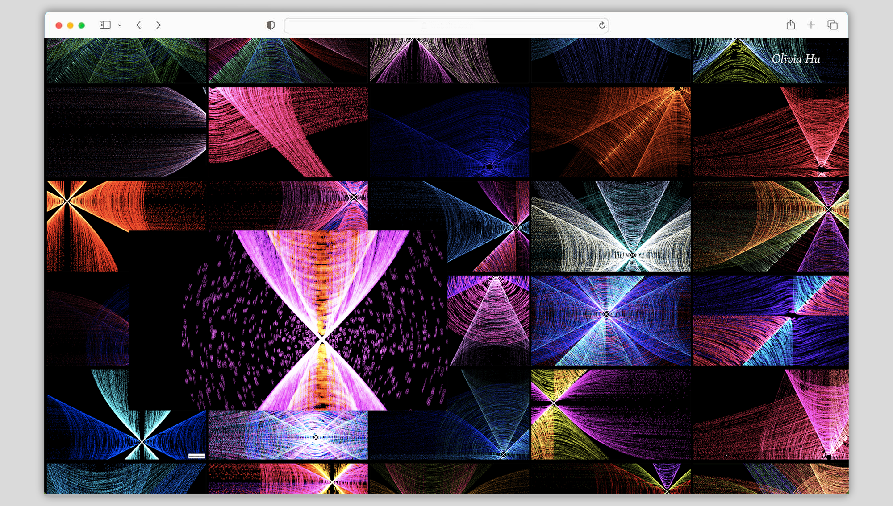
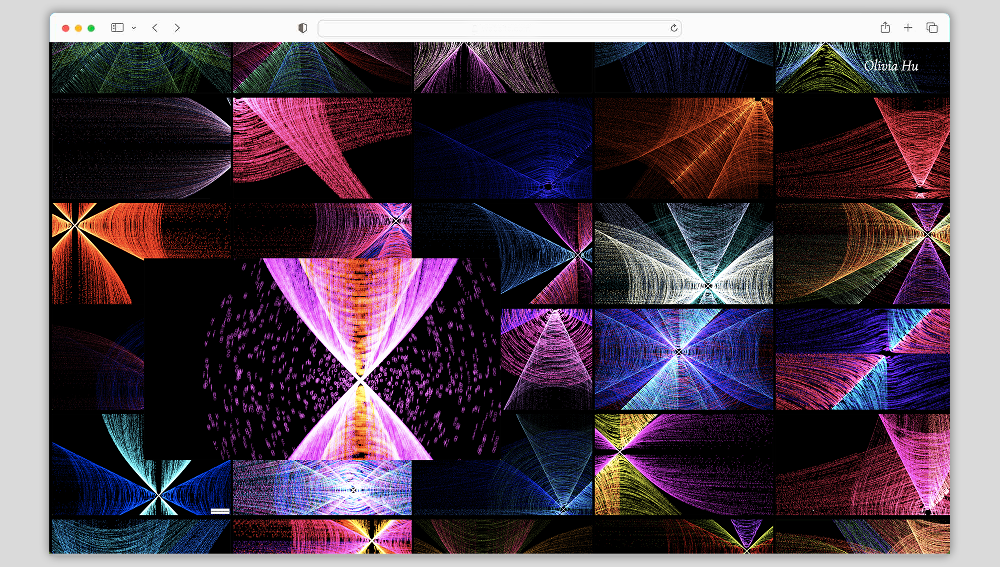
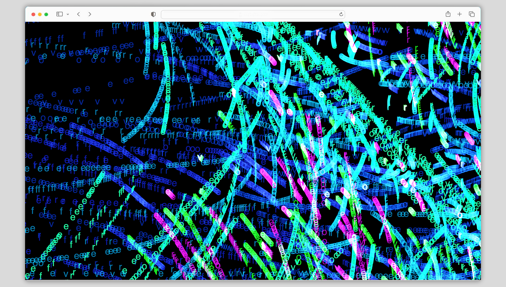
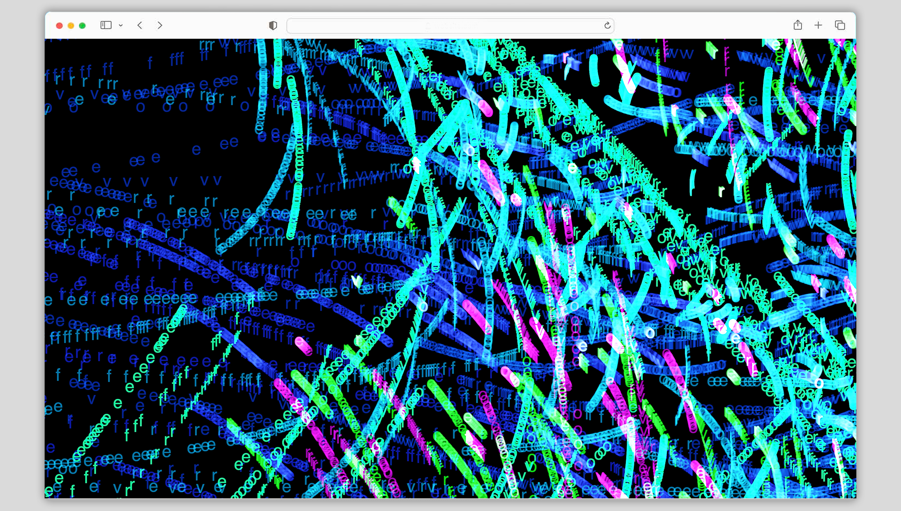

What Does Time
Feel Like To You?
Drawing inspiration from the cinematic masterpiece
Interstellar, I
utilized p5.js to craft an immersive website that brings to life the
concept of space and time through various dynamic outputs all stemming
from a single, mesmerizing code.
Visit site
Website Design


 

 
